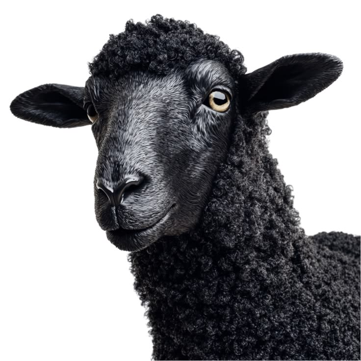

Primeiras impressões se formam em 100 milissegundos
Pesquisa da Universidade de Princeton mostra que julgamentos de confiança, competência e atratividade são feitos em um décimo de segundo — antes de qualquer palavra.
A COMUNIDADE DAS OVELHAS NEGRAS
A Sheper é a comunidade das ovelhas negras: pessoas que cansaram de se vestir para caber e decidiram se vestir para serem lembradas.
Aqui você aprende a construir estilo, presença e identidade visual com quem vive isso de verdade. Sem fórmula pronta. Sem copiar influencer. Sem gastar dinheiro em peça que vai morrer no fundo do armário.
Pesquisa da Universidade de Princeton mostra que julgamentos de confiança, competência e atratividade são feitos em um décimo de segundo — antes de qualquer palavra.
Você é julgado em 0,1 segundo. Sua roupa participa desse julgamento.
Estudo da Northwestern University demonstrou que a roupa que você usa altera sua atenção, sua confiança e o seu desempenho em tarefas.
Roupa não é estética. É estado mental.
O Streetwear Impact Report estimou o mercado global de streetwear em US$ 185 bi — a estética urbana virou a linguagem visual de uma geração.
Streetwear virou a linguagem da geração. Quem não fala, fica de fora.
Você abre o guarda-roupa cheio e sente que não tem nada.
Compra peça atrás de peça e continua parecendo qualquer um.
Salva referência no Pinterest, vê vídeo de outfit, segue criador de moda… mas quando chega a hora de se vestir, sai de casa igual ontem.
Não é falta de roupa. É falta de direção.
Não é falta de dinheiro. É falta de critério.
Não é falta de referência. É falta de identidade.
Quem entrou no rebanho errado já sentiu na pele:
Postei meu fit achando que tava bom e levei a real na hora 😂
Troquei 2 peças seguindo o feedback e foi a primeira vez que recebi elogio de gente que eu nem conhecia
Ia gastar R$400 numa jaqueta, perguntei antes na comunidade
Me mostraram por que não combinava com nada do meu guarda-roupa. Economizei e comprei o que faltava de verdade
Fiz a avaliação de guarda-roupa e descobri que eu já tinha peça boa, só não sabia usar
Montei 6 looks novos sem gastar um real 🔥
E ninguém nunca te ensinou isso. Porque escola ensina matemática, mas o mundo te julga pela imagem antes de ouvir sua história.
Moda é o que todo mundo está usando.
Estilo é o que só você consegue sustentar.
A Sheper foi criada para quem quer parar de se vestir no automático e começar a construir uma imagem intencional.
Aqui, roupa não é detalhe. É linguagem.
É o que fala antes de você abrir a boca.
É o que muda como você é percebido.
É o que separa quem entra no ambiente de quem ocupa o ambiente.
Não é sobre roupa.
É sobre quem entra na sala quando você entra.
A Sheper é um ambiente de evolução visual. Uma comunidade para você aprender, perguntar, testar, errar menos, comprar melhor e construir uma identidade que faça sentido para a sua vida.
Você não entra só para assistir aula.
Você entra para ter direção.
Você entra para ter pessoas olhando seu visual, apontando o que funciona, mostrando o que está travando sua imagem e te ajudando a evoluir com consistência.
Posta seu fit e recebe a real. Sem “tá bonito, mano”. Você entende o que funciona, o que mata seu visual e como ajustar.
Vai comprar uma peça? Pergunta antes. A comunidade te ajuda a saber se vale a pena ou se é só mais uma compra impulsiva.
Você entende o que já tem, o que falta, o que combina com sua identidade e o que deveria sair do armário.
Toda semana, ao vivo. Estilo, imagem, streetwear, carreira, lifestyle e bastidores. Você pergunta, a gente responde.
Identidade visual, guarda-roupa, streetwear, cores, modelagem, sneakers, acessórios, imagem pessoal, foto de outfit, conteúdo e lifestyle.
Todo mês um desafio para você executar. Quem participa evolui. Quem só consome continua parado.
Conexão com criadores, fotógrafos, marcas e pessoas que também vivem estilo, imagem e cultura urbana.
O que os maiores do nicho fazem quando a câmera desliga. Processo, referências, decisões, rotina e visão de mercado.
Perguntou, respondeu. Sem intermediário. Direto ao ponto.
Membro Sheper compra antes, descobre antes e paga menos quando houver parceria ativa com marcas.
Não sabe combinar as peças?
Entra na trilha de combinação.
Compra roupa e depois nunca usa?
Pede feedback antes de gastar.
Sente que todo mundo parece mais estiloso que você?
Aprenda a construir identidade.
Seu guarda-roupa não conversa com quem você quer se tornar?
A Sheper te mostra o caminho.
Escolha uma área da sua imagem, assista à trilha, aplique no seu visual e receba feedback para evoluir.
A Sheper vai além de aula de roupa.
Aqui você encontra conteúdo, feedback, comunidade, desafios, networking e bastidores para desenvolver sua imagem de forma completa.
Você não precisa comprar um curso para aprender camiseta, outro para calça, outro para tênis e outro para presença.
A Sheper junta tudo em um só lugar.
Quem acha que vai entrar e receber uma fórmula mágica de “5 looks que toda mulher ama” pode sair agora.
Aqui você não vai encontrar promessa milagrosa, cópia de influencer ou receita pronta para virar estiloso em 7 dias.
A Sheper é para quem entende que estilo se constrói com repertório, prática, feedback e consistência.
É para quem quer comprar melhor. Combinar melhor. Se apresentar melhor. E sustentar uma imagem que faça sentido.
Ovelha branca segue o rebanho.
Ovelha negra escolhe direção.
QUEM GUIA O REBANHO
NOME DO FUNDADOR — credencial · anos de mercado · projetos
A Sheper nasceu depois de anos vendo a mesma cena se repetir: gente com guarda-roupa cheio, referência salva e dinheiro gasto — mas sem direção nenhuma na própria imagem. Conteúdo de moda existe aos montes. O que não existia era um ambiente onde alguém olhasse para o SEU visual e falasse a real.
Do trabalho com estilo, streetwear e criação de conteúdo veio a tese: imagem não se copia, se constrói. A Sheper é esse ambiente de construção — aulas, feedback direto, desafios e uma comunidade que trata presença como projeto, não como sorte.
Você provavelmente já gastou mais que isso em uma peça que quase nunca usou.
Uma camiseta errada custa caro. Um tênis que não combina custa caro. Um guarda-roupa sem direção custa caro.
A Sheper custa menos que um lanche por semana para você parar de comprar no escuro e começar a construir imagem com direção.
Cancele quando quiser.
ENTRAR AGORAEntrou, viu a comunidade e sentiu que não é para você? Pede reembolso.
Sem formulário de 40 perguntas. Sem burocracia. Sem tentativa de te prender.
A gente não segura ninguém.
Ovelha negra não fica presa em cerca.
A Sheper existe para colocar você no ambiente certo. Um lugar onde estilo é levado a sério, onde as pessoas falam a real e onde cada detalhe da sua imagem pode ser ajustado com direção.
Membros postando looks e subindo de nível a cada semana.
A real que seus amigos não falam. Direto, prático, sem rodeio.
Vale a pena? Combina comigo? A comunidade responde antes de você gastar.
O processo dos criadores quando a câmera desliga.
Conteúdo novo toda semana, ao vivo, com quem vive o nicho.
Execução mensal com ranking. Quem participa, evolui.
A pergunta é simples:
Vai ser do mesmo jeito de hoje?
Ou do jeito que você sempre quis?
Você pode continuar salvando referência, comprando peça solta e tentando descobrir sozinho. Ou pode entrar em um ambiente onde estilo é tratado como construção, não como sorte.

O rebanho já está andando.
Você escolhe se vai seguir ou sair dele.